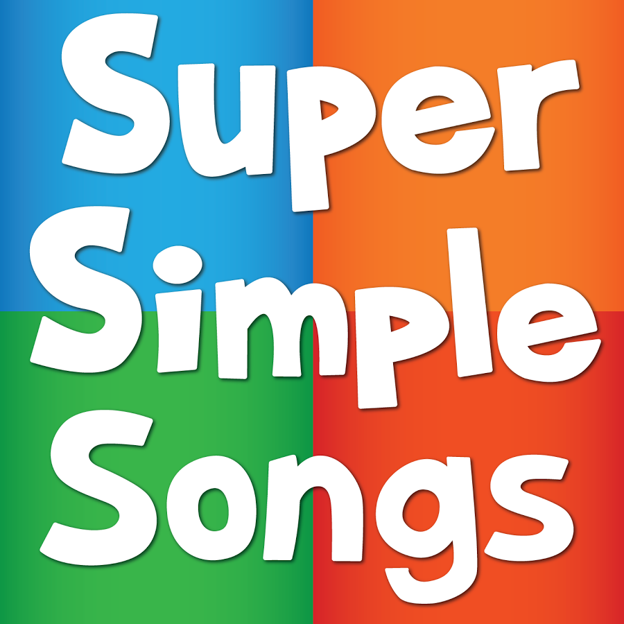
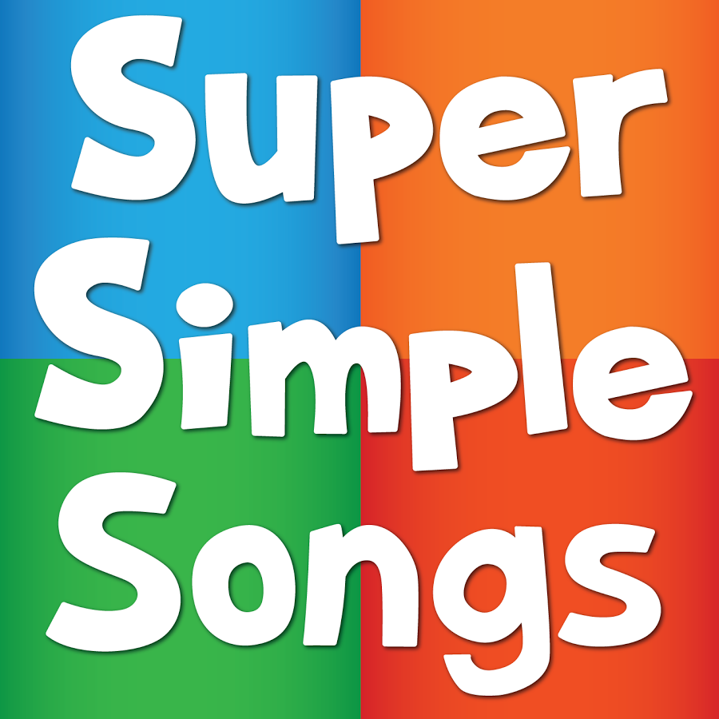

Languages
Languages 
przeciwieñstwie do szkó³ tradycyjnych, uk³adaj±c Twój program nauczania we¼miemy pod uwagê Twoje preferencje.
Je¿eli nie lubisz gramatyki, bêdziemy Ciê uczyæ g³ównie poprzez konwersacje przemycaj±c formy gramatyczne w gotowych szablonach.
Natomiast je¿eli przygotowujesz siê do egzaminu certyfikowanego lub matury przeæwiczymy z Tob± zagadnienia
gramatyczne tak by¶ odniós³ sukces podczas egzaminu.
Podczas lekcji wykorzystujemy materia³y autentyczne: magazyny, piosenki oraz filmiki, które umo¿liwiaj± kontakt z jêzykiem w rzeczywistych sytuacjach. Stanowi± one nieodzowny element nowocze¶nie prowadzonych kursów jêzykowych.
Nauczanie uatrakcyjniamy grami wykorzystuj±c smartfony i tablety. Technologie mobilne stosujemy do pracy nad wszystkimi sprawno¶ciami jêzykowymi, a tak¿e nad s³ownictwem, wymow± oraz gramatyk±. U¿ywamy licznych aplikacji dostosowanych do odbiorców w ka¿dym wieku: do dzieci i doros³ych, zarówno na poziomie pocz±tkuj±cym, jak i zaawansowanym.

Super Simple Song - piosenki w jêzyku angielskim po³±czone z zabawami ruchowymi. Metoda Super Simple Learning zosta³a opracowana przez nauczycieli jêzyka angielskiego z USA i Kanady, pracuj±cych w Japonii i ¶wiêci du¿e sukcesy pedagogiczne. Na zajêciach mali uczestnicy ¶piewaj±, tañcz±, s³uchaj± muzyki i partycypuj± w zabawach ruchowych oraz w scenkach, nabywaj±c w ten sposób kompetencji lingwistycznych Piosenki SUPER SIMPLE SONGS s± dostosowane do wieku dziecka, a gesty do nich zosta³y opracowane w oparciu o Amerykañski Jêzyk Migowy dziêki czemu nawet najm³odsze dzieci chêtnie i aktywnie uczestnicz± w zajêciach.
Play me and learn - to gry, które ucz± s³ówek, gramatyki, poprawiaj± komunikacjê. Gry Play me and learn pozwalaj± najm³odszym skoncentrowaæ siê na celu, wprowadzaj± element rywalizacji b±d¼ wspó³pracy, pobudzaj± kreatywno¶æ, ucz± my¶lenia abstrakcyjnego, pozwalaj± uczyæ siê na w³asnych b³êdach oraz rozwijaj± wyobra¼niê. To wszystko sprawia, ¿e nauka jêzyka jest czyst± przyjemno¶ci±!
Materia³y autentyczne
Podczas lekcji wykorzystujemy materia³y autentyczne: magazyny, piosenki oraz filmiki, które umo¿liwiaj± kontakt z jêzykiem w rzeczywistych sytuacjach. Stanowi± one nieodzowny element nowocze¶nie prowadzonych kursów jêzykowych.
Game based learning z wykorzystaniem narzêdzi mobilnych
Nauczanie uatrakcyjniamy grami wykorzystuj±c smartfony i tablety. Technologie mobilne stosujemy do pracy nad wszystkimi sprawno¶ciami jêzykowymi, a tak¿e nad s³ownictwem, wymow± oraz gramatyk±. U¿ywamy licznych aplikacji dostosowanych do odbiorców w ka¿dym wieku: do dzieci i doros³ych, zarówno na poziomie pocz±tkuj±cym, jak i zaawansowanym.
Sensoryczne odkrywanie jêzyka obcego
Metoda ta skierowana jest do najm³odszych, oparta na ruchu, grach, dramie, piosenkach a przede wszystkim - zabawie!
Super Simple Song - piosenki w jêzyku angielskim po³±czone z zabawami ruchowymi. Metoda Super Simple Learning zosta³a opracowana przez nauczycieli jêzyka angielskiego z USA i Kanady, pracuj±cych w Japonii i ¶wiêci du¿e sukcesy pedagogiczne. Na zajêciach mali uczestnicy ¶piewaj±, tañcz±, s³uchaj± muzyki i partycypuj± w zabawach ruchowych oraz w scenkach, nabywaj±c w ten sposób kompetencji lingwistycznych Piosenki SUPER SIMPLE SONGS s± dostosowane do wieku dziecka, a gesty do nich zosta³y opracowane w oparciu o Amerykañski Jêzyk Migowy dziêki czemu nawet najm³odsze dzieci chêtnie i aktywnie uczestnicz± w zajêciach.
Play me and learn - to gry, które ucz± s³ówek, gramatyki, poprawiaj± komunikacjê. Gry Play me and learn pozwalaj± najm³odszym skoncentrowaæ siê na celu, wprowadzaj± element rywalizacji b±d¼ wspó³pracy, pobudzaj± kreatywno¶æ, ucz± my¶lenia abstrakcyjnego, pozwalaj± uczyæ siê na w³asnych b³êdach oraz rozwijaj± wyobra¼niê. To wszystko sprawia, ¿e nauka jêzyka jest czyst± przyjemno¶ci±!